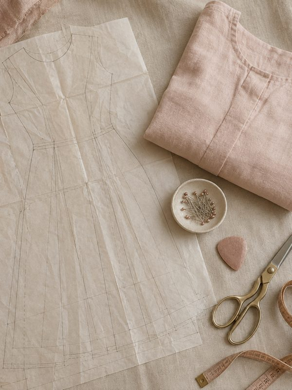

Prodotto principale
Libreria Cartamodelli
Scegli categoria e taglia, guarda il disegno del cartamodello e scarica il PDF pronto da stampare in A4.
Apri →I tuoi bonus
Bonus 1
Manuale di Utilizzo dei Cartamodelli
Come stampare, assemblare e tagliare i cartamodelli PDF con precisione fin dal primo capo.
Apri →Bonus 2Guida per Principianti del Cucito
Dagli attrezzi ai punti base fino al tuo primo capo finito, senza esperienza.
Apri →Bonus 3Lista dei Materiali Consigliati
Tessuti, aghi, fili e accessori giusti per ogni capo, con la lista della spesa pronta.
Apri →Bonus 4Consigli per Finiture Professionali
I dettagli che rendono un capo cucito a mano simile a uno professionale.
Apri →Bonus 5Tabella Misure Professionale
Come prendere le misure e scegliere la taglia, con le tabelle per donna, uomo, bambini e neonati.
Apri →Da dove iniziare
- Apri la Libreria Cartamodelli e scegli la categoria.
- Scegli il capo e la tua taglia, poi tocca Scarica il PDF.
- Stampa in A4 al 100% e controlla il quadrato di 10 cm.
- Leggi il Manuale di Utilizzo dei Cartamodelli prima del primo capo.
Solo per uso personale. Vietata la rivendita o redistribuzione.